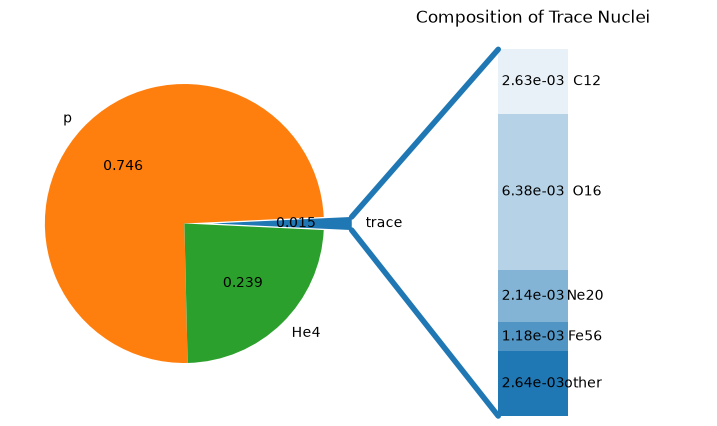

Solar Composition#
Here we show how to work with the SolarComposition class, which initializes a composition from the present day solar abundances of Lodders [2020]. To access the data tables, follow this link. This class gives the option to set a desired metallicity Z=0.0 and scales the solar abundances accordingly. If no metallicity is provided, it will be calculated from the Lodders data as (1 - H - He).
import numpy as np
import matplotlib.pyplot as plt
from ipywidgets import interact, FloatSlider
from pynucastro.nucdata import SolarComposition, Nucleus
Setting solar composition and finding the top 10 most abundant isotopes#
def top_10_isotopes(comp, n=10):
fracs = sorted(comp.items(), key=lambda frac: frac[1], reverse=True)
return fracs[:n]
solar = SolarComposition() ## Default metallicity
top = top_10_isotopes(solar, n=10)
for nuc, X in top:
print(f"{nuc.short_spec_name:>6} X= {X:.4f}")
h1 X= 0.7462
he4 X= 0.2388
o16 X= 0.0064
c12 X= 0.0026
ne20 X= 0.0019
fe56 X= 0.0011
n14 X= 0.0007
si28 X= 0.0006
mg24 X= 0.0005
s32 X= 0.0003
Binning Solar composition to a desired network#
If we wish to use a network that does not contain all isotopes that are in the Lodders data, then we use Composition.bin_as which will bin the Lodders data to the desired network:
solar = SolarComposition()
new_comp = [Nucleus("p"),
Nucleus("he4"),
Nucleus("o16"),
Nucleus("c12"),
Nucleus("ne20"),
Nucleus("fe56"),
Nucleus("n14"),
Nucleus("si28"),
Nucleus("mg24"),
Nucleus("s32")] ## Desired network
binned_comp = solar.bin_as(new_comp)
print("Sum of binned comp:", sum(binned_comp.values()))
fig = binned_comp.plot()
Sum of binned comp: 1.000000000000001

Scaling H and He with desired metallicty Z#
def xyz_from_comp(comp):
X = 0.0
Y = 0.0
Z = 0.0
for nuc, X_i in comp.items():
if nuc.Z == 1: # Total H
X += X_i
elif nuc.Z == 2: # Total He
Y += X_i
else:
Z += X_i # Total metals
return X, Y, Z
solar = SolarComposition()
X_solar, Y_solar, Z_solar = xyz_from_comp(solar)
print("Default solar metalicity is Z = ", Z_solar)
def plot_solar(Z):
comp = SolarComposition(Z=Z)
X, Y , Z = xyz_from_comp(comp)
plt.figure(figsize=(4,4))
labels = ["H", "He", "Metals"]
values = [X,Y,Z]
x = np.arange(len(labels))
fig, ax = plt.subplots()
ax.bar(x, values)
ax.set_xticks(x)
ax.set_xticklabels(labels)
ax.set_ylabel("Mass Fractions")
ax.set_ylim(0, 1.0)
ax.set_title(f"Solar Composition at Z = {Z:.3f}")
plt.show()
interact(
plot_solar,
Z=FloatSlider(
value=Z_solar,
min=0.01,
max=0.04,
step=0.001,
description="Z",
readout_format=".3f"
)
)
Default solar metalicity is Z = 0.014964158698946859
<function __main__.plot_solar(Z)>